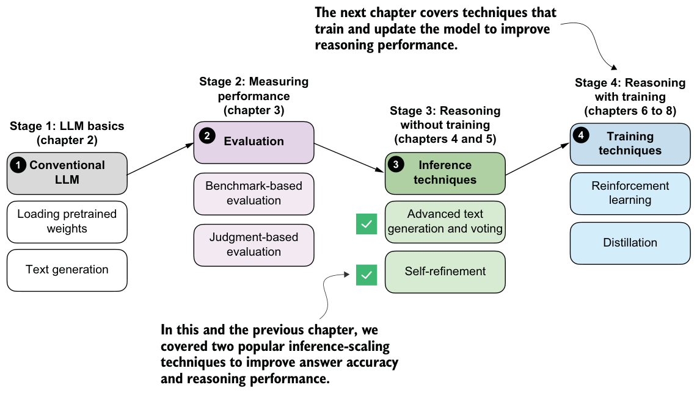

Exercise 5.5: Using the heuristic score for self-refinement
self_refinement_loop using the heuristic_score function, which we defined in listing 5.3.The previous example showed that self-refinement can help the model generate the correct answer. To get a better idea of how useful this self-refinement method really is, I ran it on MATH-500 and summarized the results in table 5.1.
| Method | Scoring | Iterations | Model | Accuracy | Time | |
|---|---|---|---|---|---|---|
| 1 | Baseline (chapter 3) | - | - | Base | 15.2% | 10.1 min |
| 2 | Self-refinement | None | 1 | Base | 25.0% | 84.8 min |
| 3 | Self-refinement | None | 2 | Base | 22.0% | 165.4 min |
| 4 | Self-refinement | Heuristic | 1 | Base | 21.6% | 84.7 min |
| 5 | Self-refinement | Heuristic | 2 | Base | 20.8% | 151.4 min |
| 6 | Self-refinement | Avg. logprob | 1 | Base | 21.4% | 85.3 min |
| 7 | Self-refinement | Avg. logprob | 2 | Base | 22.0% | 165.3 min |
| 8 | Baseline (chapter 3) | - | - | Reasoning | 48.2% | 182.1 min |
| 9 | Self-refinement | None | 1 | Reasoning | 56.6% | 498.8 min |
| 10 | Self-refinement | Heuristic | 1 | Reasoning | 57.8% | 498.6 min |
| 11 | Self-refinement | Avg. logprob | 1 | Reasoning | 48.4% | 499.7 min |
The accuracy values shown in table 5.1 were computed on all 500 samples in the MATH-500 test set using a "cuda" GPU (DGX Spark).
As shown in table 5.1, self-refinement improves performance over the base model (rows 1–7), but the improvement is very moderate, with the best accuracy achieved when no scoring is used in self-refinement. This means that both the heuristic score and the average logprob score can sometimes lead to incorrect answers being accepted over the initial correct answer.
Note that when adding "Explain step by step." chain-of-thought to both the base model and the self-refinement, the model failed to improve over the base model (results not shown).
Looking at the reasoning model results (rows 8–11), we can see that the combination of self-refinement and heuristic scoring improved answer accuracy by almost 10%. (As explained in chapter 3, the reasoning model can be used by changing which_
model="base" to which_model="reasoning" in load_model_and_tokenizer in listing 5.1.)In both cases, it seems that average logprob scoring results in worse performance than no scorer or the heuristic scorer. This is likely because the average logprob score is more closely related to how natural or expected an answer looks under the model than to whether the answer is actually correct. As a result, it can favor answers that are fluent, familiar, or syntactically clean, even when they are semantically wrong. In other words, the logprob criterion can unintentionally select confident mistakes, whereas the heuristic score is more focused on the format and structure of the answer.
At this point, it may seem that we’ve spent a lot of time discussing the concept of average logprob scoring. Logprob scoring is a fundamental concept when working with
LLMs, and it will come in handy in upcoming chapters, when we implement the reinforcement learning training procedure.
Comparing the results in table 5.1 with those in the previous chapter (table 4.1), we also observe that self-refinement is less effective than self-consistency for this model on this math task. Self-consistency remains widely used because it works well in practice, despite its simplicity.
Another method we haven’t explored in this chapter is self-refinement with an external model in an LLM-as-a-judge setup, similar to what’s described in appendix F (section F.5). For instance, instead of using the heuristic score or average logprob, we can use a second LLM to compute a score and write the critique.
In November 2025, with DeepSeekMath-V2, the DeepSeek team demonstrated that self-refinement with a second LLM can be very successful, leading to gold-level performance in several math competitions. Specifically, the team proposed a new method in which they trained a second LLM to be a strong critique model and further trained their base model to become a better math problem solver in the context of self-refinement (by contrast, in this chapter, we applied self-refinement without any additional training).
This concludes our discussion of inference scaling without additional training (see figure 5.22). In the next chapter, we’ll begin covering training techniques that update the model weights to improve reasoning.
